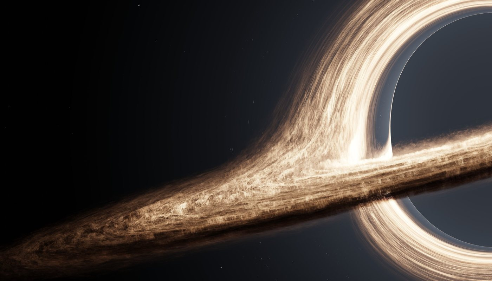
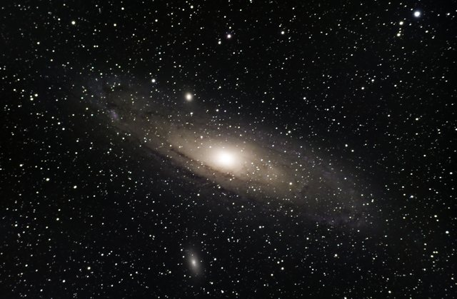
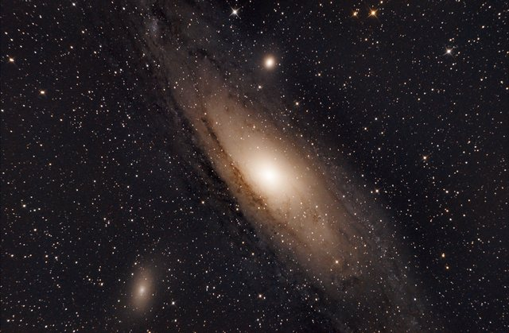
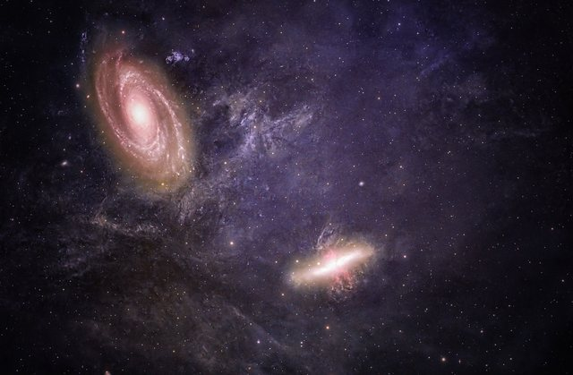

Welcome to the World of Black Holes
Explore the most mysterious objects in the universe —
where gravity,
space and time break the rules.
What are they?
tap to flipBlack holes are regions of space where gravity is so strong that nothing can escape.
Why do they matter?
tap to flipThey help us understand gravity, the evolution of galaxies and the nature of the universe.
Explore further
tap to flipLearn about their origins, how they are detected and the latest discoveries.
Go to Detection →Black holes are not the end, but a beginning of a deeper understanding of our universe.
This site's motto, inspired by A Brief History of Time (Hawking, 1988).
What Will You Discover?
- How black holes form and the three main types
- How we find them, from gravitational waves to images
- Read more at NASA Science
Where Black Holes Live
Most large galaxies are thought to have a supermassive black hole at the centre, including our own Milky Way (NASA, 2026).



Quick Facts
| Black Holes: The Mystery | |
|---|---|
| First image of one | M87* (2019) |
| Milky Way's central black hole | Sagittarius A* |
| Its mass | About 4 million Suns |
| Pages on this site | 6 ★ |